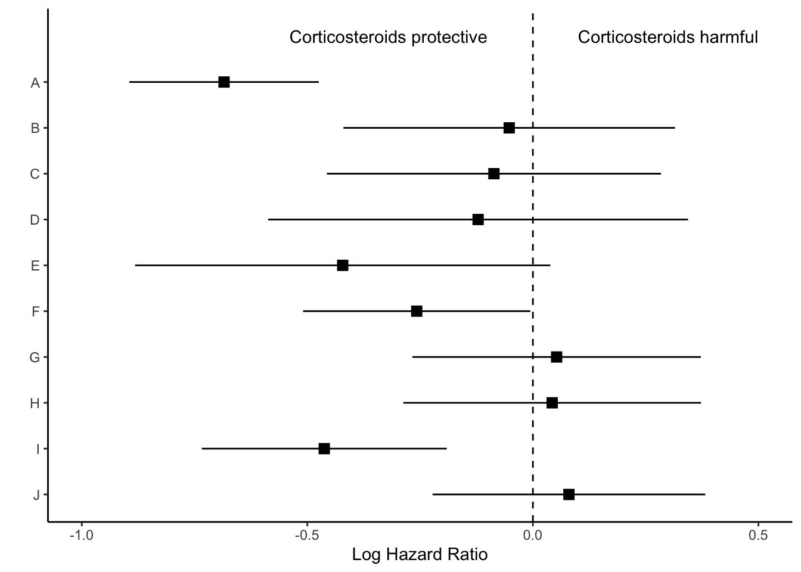

This post contains a short R code walkthrough to make annotated forest plots like the one shown above. There are packages to make plots like these such as forester, forestplot, and ggforestplot, but sometimes I still prefer to make my own.
The big picture of this is that we’ll be making three separate ggplot2 objects and putting them together with patchwork. You could also use packages like cowplot, gridarrange or ggarrange to put the intermediate plot objects together.
Step 0: Load libraries and data
First we will load the necessary libraries and the data set. The data we’ll use for this plot are the effect estimates for 10 Cox regression models. The models, titled A-J, are stored in a data set called res, stored as a csv on my Github.
library(tidyverse)library(gt)# Importres
The results object contains:
model: the model label A-J
log.estimate: log hazard ratio, since these were Cox regressions
log.conf.low and log.conf.high: log hazard ratio 95% confidence intervals
estimate: hazard ratio
conf.low and conf.high: hazard ratio 95% confidence intervals
Step 1: Make point and line range section of the plot
We will first work on making the standard “forest plot”, or the middle section of the figure. This section uses points and lines to indicate the estimate and 95% confidence interval around the estimate.
In my experience, journal editors sometimes ask for these estimates to look a certain way during the revision process. For this graph, the journal editor told me that it was “journal standard to plot relative measures (ratio data), such as ORs, on log scales to preserve the correct spatial relationship between values.” So, I’m going to be visually showing the log hazard ratio, and annotating later with the hazard ratio.
Let’s look at how we can plot the log hazard ratio estimates. We first want the models to show in alphabetical order from the top to the bottom of the graph.
res |>ggplot(aes(y =fct_rev(model))) +theme_classic()
Then we show all of our information (point estimate and 95% confidence interval) on the graph.
res |>ggplot(aes(y =fct_rev(model))) +theme_classic() +geom_point(aes(x=log.estimate), shape=15, size=3) +geom_linerange(aes(xmin=log.conf.low, xmax=log.conf.high))
Next we’ll use coord_cartesian() which will allow us to zoom to the exact height and width we want. I want to zoom out a bit to leave myself room for the text “Corticosteroids protective” vs. “Corticosteroids harmful” so I’m going to set my limits to y=c(1,11). Each of the models (10 in total) is one unit, so this will give me one extra unit of space at the top of the plot. The x-limit I played around with a bit based upon the range of my log hazard ratios, and I ultimately arrived at xlim=c(-1, .5).
Now we have space to add our text about protective vs. harmful using the annotate layer.
res |>ggplot(aes(y =fct_rev(model))) +theme_classic() +geom_point(aes(x=log.estimate), shape=15, size=3) +geom_linerange(aes(xmin=log.conf.low, xmax=log.conf.high)) +labs(x="Log Hazard Ratio") +geom_vline(xintercept =0, linetype="dashed") +coord_cartesian(ylim=c(1,11), xlim=c(-1, .5)) +annotate("text", x =-.32, y =11, label ="Corticosteroids protective") +annotate("text", x = .3, y =11, label ="Corticosteroids harmful")

Finally, we will remove everything on the y axis, because this plot is going to align with the next plot we make, showing the hazard ratios.
p_mid <- res |>ggplot(aes(y =fct_rev(model))) +theme_classic() +geom_point(aes(x=log.estimate), shape=15, size=3) +geom_linerange(aes(xmin=log.conf.low, xmax=log.conf.high)) +labs(x="Log Hazard Ratio") +geom_vline(xintercept =0, linetype="dashed") +coord_cartesian(ylim=c(1,11), xlim=c(-1, .5)) +annotate("text", x =-.32, y =11, label ="Corticosteroids protective") +annotate("text", x = .3, y =11, label ="Corticosteroids harmful") +theme(axis.line.y =element_blank(),axis.ticks.y=element_blank(),axis.text.y=element_blank(),axis.title.y=element_blank())
We’ll save this ggplot object as p_mid and move on to the next section of the figure.
Step 2: Create estimate annotations plot
To plot the hazard ratio estimates, we first need to modify the data set a bit. We’ll start by rounding our estimates to the significant figures the journal requires. For this figure, I need two decimal places.
# right side of plot - pvaluesp_right <- res_plot |>ggplot() +geom_text(aes(x =0, y = model, label = p.value),hjust =0,fontface =ifelse(res_plot$p.value =="p-value", "bold", "plain") ) +theme_void() p_right
Step 4: Put the three plots together with patchwork
layout <-c(area(t =0, l =0, b =30, r =3),area(t =1, l =4, b =30, r =9),area(t =0, l =9, b =30, r =11))# final plot arrangementp_left + p_mid + p_right +plot_layout(design = layout)
Step 5: Export your plot!
ggsave("forest-plot.eps", width=9, height=4)
Just the code
## load up the packages we will need: library(tidyverse)library(gt)library(patchwork)## ---------------------------## load data# load in results generated from Cox PH hazards models## plotting## ---------------------------# create forest plot on log scale (middle section of figure)p_mid <- res |>ggplot(aes(y =fct_rev(model))) +theme_classic() +geom_point(aes(x=log.estimate), shape=15, size=3) +geom_linerange(aes(xmin=log.conf.low, xmax=log.conf.high)) +labs(x="Log Hazard Ratio") +coord_cartesian(ylim=c(1,11), xlim=c(-1, .5))+geom_vline(xintercept =0, linetype="dashed") +annotate("text", x =-.32, y =11, label ="Corticosteroids protective") +annotate("text", x = .3, y =11, label ="Corticosteroids harmful") +theme(axis.line.y =element_blank(),axis.ticks.y=element_blank(),axis.text.y=element_blank(),axis.title.y=element_blank())# wrangle results into pre-plotting table formres_plot <- res |>mutate(across(c(estimate, conf.low, conf.high), ~str_pad(round(.x, 2), width=4, pad="0", side="right")),estimate_lab =paste0(estimate, " (", conf.low, "-", conf.high,")"),color =rep(c("gray","white"),5)) |>mutate(p.value =case_when(p.value < .01~"<0.01", TRUE~str_pad(as.character(round(p.value, 2)),width=4,pad="0",side="right"))) |>bind_rows(data.frame(model ="Model", estimate_lab ="Hazard Ratio (95% CI)", conf.low ="", conf.high="",p.value="p-value")) |>mutate(model =fct_rev(fct_relevel(model, "Model")))# left side of plot - hazard ratiosp_left <- res_plot |>ggplot(aes(y = model)) +geom_text(aes(x=0, label=model), hjust=0, fontface ="bold") +geom_text(aes(x=1, label=estimate_lab), hjust=0, fontface =ifelse(res_plot$estimate_lab =="Hazard Ratio (95% CI)", "bold", "plain")) +theme_void() +coord_cartesian(xlim=c(0,4))# right side of plot - pvaluesp_right <- res_plot |>ggplot() +geom_text(aes(x=0, y=model, label=p.value), hjust=0, fontface =ifelse(res_plot$p.value =="p-value", "bold", "plain")) +theme_void() # layout design (top, left, bottom, right)layout <-c(area(t =0, l =0, b =30, r =3),area(t =1, l =4, b =30, r =9),area(t =0, l =9, b =30, r =11))# final plot arrangementp_left + p_mid + p_right +plot_layout(design = layout)## save final figure#ggsave("forest-plot.eps", width=9, height=4)